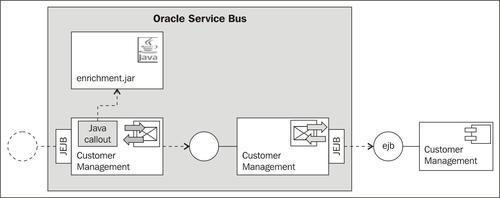
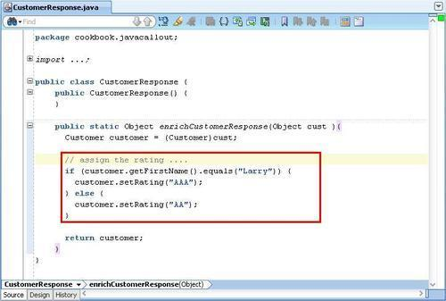
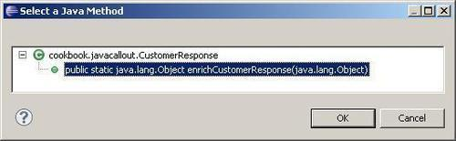
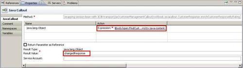
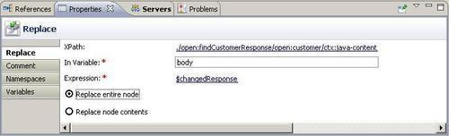
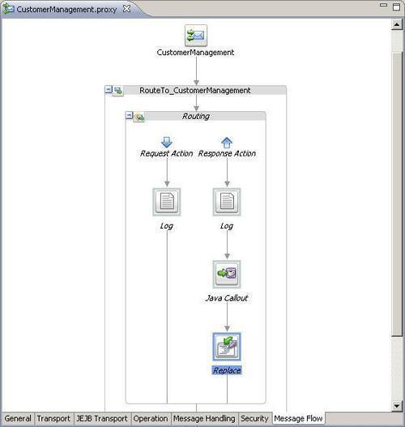
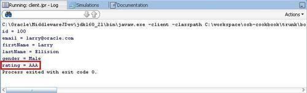
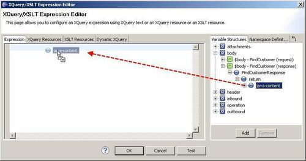

In this recipe, we show how to change the response and enrich the message by a value for the rating attribute. For that, we have to create a Java class that we will call from the message flow of the proxy service through a Java Callout action:

We have created a simple Java class as shown in the following screenshot:

As we can see, this Java class has one method, which enriches the value of the rating attribute of a customer object based on the value of the first name attribute. The method accepts a parameter of type Object and cast this to a Customer type.
To make it available to OSB, we have to package the Java classes into a JAR. This JAR is available as enrichment.jar in the ejb-jdev-workspace\ejb\deploy folder.
Make sure that the EJB session bean is deployed to the OSB server as shown in the Introduction section of this chapter.
Import the base OSB project containing the necessary schemas and the right folder structure into Eclipse from \chapter-4\getting-ready\change-response-of-jejb-transport.
Let's make the Java class available in the OSB project. In Eclipse OEPE, perform the following steps:
enrichment.jar from the ejb-jdev-workspace\ejb\deploy folder and paste it into the jar folder. enrichmentByCallout.jar file. enrichCustomerResponseByRating method:
$body/open:findCustomerResponse/open:customer/ctx:java-content into the Expression field. changedResponse into the Result Value field:
body into the In Variable field. /open:findCustomerResponse/open:customer/ctx:java-content. $changedResponse, which holds the reference to the POJO returned from the Java Callout action.

Retest the implementation by using the same Java test class. The rating should no longer be null:

When we examine the log output, we can see that the response from the EJB session bean contained in the body has the following content:
<soap:Body xmlns:soap="..."> <ns:findCustomerResponse xmlns:ns="http://www.openuri.org/"> <ns:customer> <con:java-content ref="jcid:-6bfa91a1:132950119a5:-7f3a" xmlns:con="http://www.bea.com/wli/sb/context"/> </ns:customer> </ns:findCustomerResponse> </soap:Body>
The value of the con:java-content element, holds the reference to the POJO being passed back by the EJB session bean method. By passing that value of con:java-content to the Java Callout, we can then access the POJO in our enricher Java class.
The object returned from the enricher Java Callout is also in the form of con:java-content, which is used in the Replace action to overwrite the con:java-content part of the body variable.
Be careful when using the Variable Structures tree to specify an expression into the java-content part (step 10 in the recipe).
If the argument names of the methods have been renamed, that is, from return to customer in our case, then the drag-and-drop feature implemented in Eclipse OEPE will not be aware of it.
If we drag the java-content element as shown in the following screenshot into the Expression field, then we manually have to replace return by customer, to get the correct expression $body/open:findCustomerResponse/open:customer/ctx:java-content:
$body/open:findCustomerResponse/open:customer/ctx:java-content:
